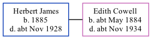

Herbert R James 1885 - c1928
[ Home ] | [ Calendar ] | [ Surnames Index ] | [ Family History ], Herbert James, the husband of Edith Eliza Cowell (the great-aunt of Nigel Horne), was born in Broadstairs, Kent, England in 1885<span class="citation">1,2</span>. He married Edith (a servant domestic daily) in Thanet, Kent, England around Nov 1911<span class="citation">3</span>.</p><p>Throughout his life, he lived on Highfield Road, Bognor, Westhampnett, Sussex, England in 1921<span class="citation">1</span> and on Jun 19, 1921<span class="citation">1</span>. Herbert In 1921 he was working at Mr Carter Out Of Work (Now).<p>He died <i>c.</i> Nov 1928 in East Preston, West Sussex, England<span class="citation">2</span>.
Citations
- 1921 Census Of England & Wales - Findmypast (was age 36 and the head of the household)
- England & Wales deaths 1837-2007 - Findmypast
- England & Wales, FreeBMD Marriage Index: 1837-1915 Online publication - Provo, UT, USA: The Generations Network, Inc., 2006.Original data - General Register Office. England and Wales Civil Registration Indexes. London, England: General Register Office. © Crown copyright. Published by permission of the Cont
Media
England & Wales marriages 1837-2008 - BMD/M/1911/4/AZ/000512/084
England & Wales Deaths 1837-2007 - BMD/D/1928/4/AZ/000477/074
Family Tree
Generated by Ged2Site. Last updated on Jul 20, 2025